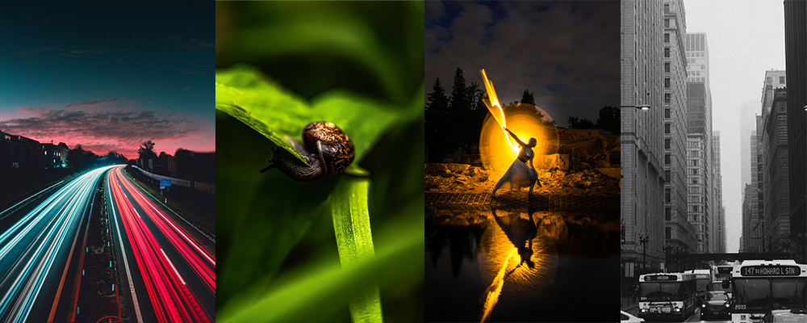

© unsplash.com
Fotografi ada tekniknya?
Yaps benar guys fotografi bukan sekadar cekrek atau sekadar
menentukan mana angle yang bagus untuk kita. Untuk menghasilkan
foto yang indah kita perlu menguasai teknik-teknik fotografi.
Apa saja sih teknik-teknik fotografi? Mari kita bahas satu persatu.
- Long Exposure
- Makro
- Light painting
- Black & White
- Siluet
Teknik Long Exposure
ini, kita memanfaatkan shutter speed
yang lambat untuk
memotret benda yang bergerak misalnya mobil, air mengalir, dan lain sebagainya.
Teknik ini cocok digunakan kalau kalian ingin mengambil objek jalan raya, bintang di langit, dan lain sebagainya.
Dari namanya saja kita tahu bahwa makro
artinya besar, jadi bisa disimpulkan teknik makro
adalah teknik fotografi dengan mengambil gambar agar terlihat lebih besar.
Teknik ini biasa dipakai untuk mengambil objek yang kecil. Tidak semua lensa bisa mengambil
gambar makro, biasanya lensa yang dipakai dilengkapi dengan lensa jarak fokus makro 50mm-200mm.
Dilansir dari Digital Photography School, teknik light painting adalah teknik fotografi yang
menggunakan sumber cahaya lain, seperti senter, untuk menambahkan cahaya pada objek
yang akan diambil.
Pengambilan gambar dengan teknik ini termasuk rumit dilakukan, hal
yang perlu adalah tripod agar gambar tidak goyang, dan juga senter.
Untuk teknik ini cukup sering dilakukan oleh fotografer, caranya cukup mudah, biasanya dikamera
sudah disediakan pengaturan atau filter yang membuat foto kamu menjadi hitam putih, atau
black and white.
Jika tidak terdapat pengaturannya, kamu bisa menggunakan bantuan aplikasi edit
seperti photoshop dan aplikasi lainnya.
Kalian pernah foto membelakangi cahaya? Kalau pernah itu termasuk teknik foto silutet. Foto
yang dihasilkan hanya berupa bayangan dan lebih menonjolkan background foto.
Biasanya, waktu yang tepat untuk mendapatkan foto siluet adalah saat matahari terbenam.
Nah itu dia teman-teman beberapa teknik fotografi yang bisa kalian pelajari, agar hasil jepretan kalian semakin bagus.
Sumber

Ditulis oleh:
Leave a comment here!